Hi, my name is Moldovan Darius (aka. T3jv1l). Here is a Proof of Concept, about how I was able to Crack PassFab Software with Buffer Overflow Vulnerability. First time I will explain what Buffer Overflow vulnerability is.
Buffer Overflow: The buffer is a temporary area for storing data. When more data than initially allocated for storage is exceeded causes a change in memory, these additional data slip into other storage areas, which may corrupt or overwrite the data it holds. Exploitation this application is not dangerouse for users, but using this buffer I was able to steal all the (Serial Keys).
Let’s dirty my hands: For replicate every step we need few tools for disassembly the software. I use: IDA PRO 6.8 Version for static analyze and x64dbg for dynamic analyze. First step is loading a software in x64dbg is easy to use (ALT+A to attach the application). Run x64 with Administrator Privilege because PassFab run just with this privilege.
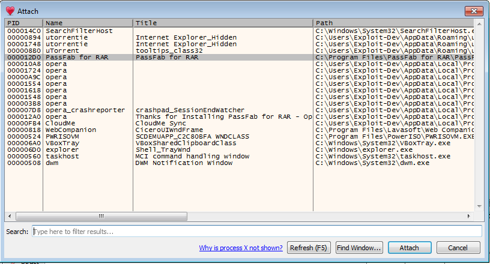
Attach the program is done. We need to found hex address ex: 0x01234567 where the passfab.exe is start, because this software have ASLR (Address Stack Layer Randomize, for more info check Wikipedia) protection on, that means the address is all time changed. This address where passfab start is used for reconfigure all the address in IDA Tools. Ok, now use (ALT+M) to see memory map and scroll down where you see something like this.
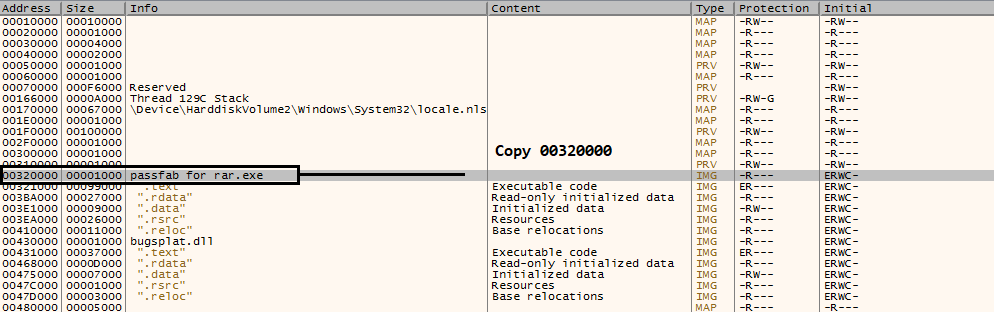
Copy the first address 0x00320000, maybe you will see another address (ASLR), but concept is same.
Now is time to Rebase program the memory from IDA (Rebase program means: The whole program will be shifted by the specifed amounts of bytes in the memory). Step for Rebase address in IDA (Edit > Segments > Rebase program). Value is started address at passfab.exe.
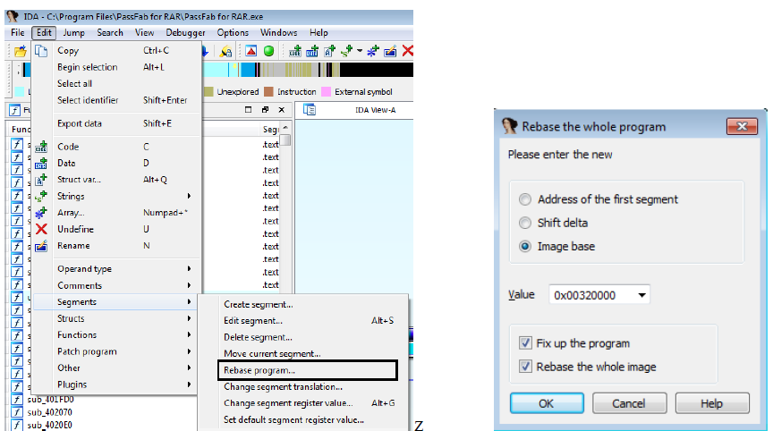
Now is turn to found the weak code in software. We need to generate a buffer exceed, let’s send x41 (A) in the field of “Licensed E-mail” and “Registration Code”. I wirite a simple program in python to generate 2000 A char’s.
#!/usr/bin/Python
filename="crack.txt"
junk="\x41"*2000
buffer = junk
textfile = open(filename, 'w')
textfile.write(buffer)
textfile.close()
Send the junk to PassFab RAR.
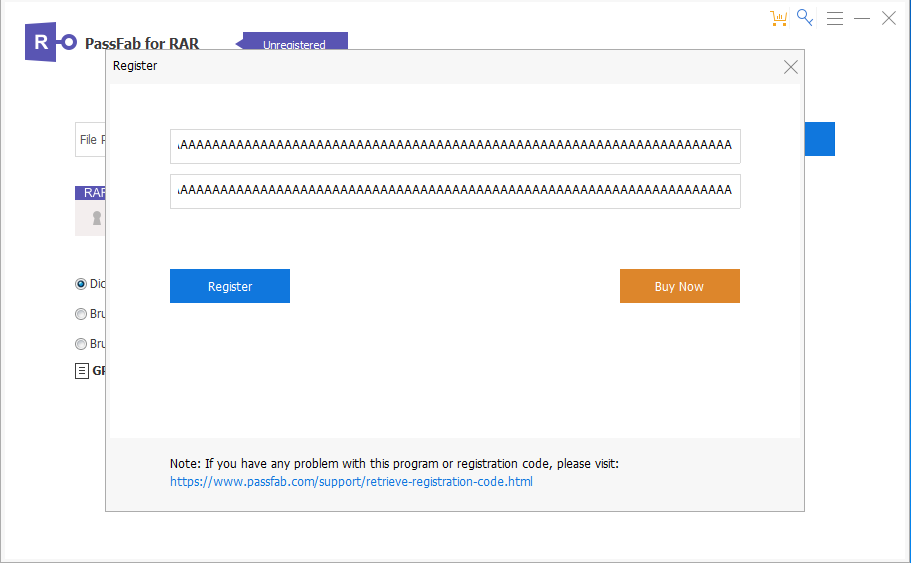
Go to x64dgb and look at EAX register is overwrite with AAAA, that means the memory is overwrite with my character.
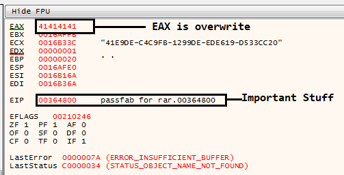
Now we need to focus at EIP, there is the important register, he tryed to said what is bad in this program. Copy the EIP address 0x00364800 and go in IDA. Press G in IDA and copy the EIP address.
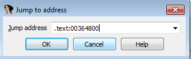
Now we have this function. Press F5 to convert ASM into Pseudocode and read the code
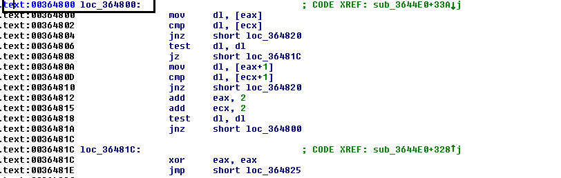
Here we have the function translated in Pseudocode.
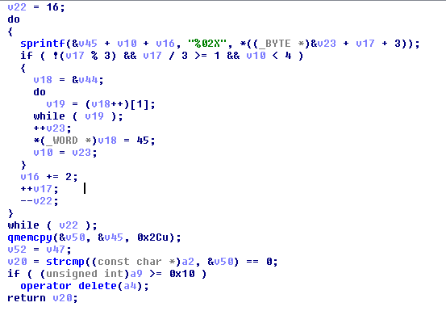
I will explain little bit what happened here. Here is the function of comparing the serial key, the algorithm for generating the offline key is generated with the data that the user enters. Validation is compared in this section:
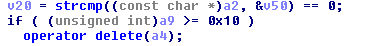
There we have the variable v50, which is a char, that means there is the key for validation. Let’s look close (char v50;// is located in breakpoint -110h).
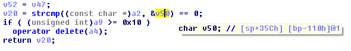
So if we analyze the address of bp-110H will see something interesting.
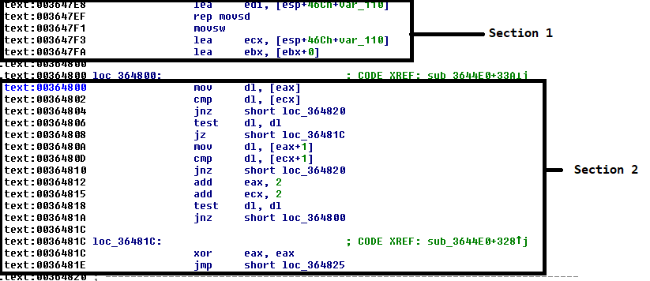
In Section 1 we have 0x003647E8 lea edi, [esp+46Ch+var_110], here is the key which is moved into EDI register. In Section 2 we have more instruction, CMP is for compare, JNZ is used like instruction “if” in C/C++, that means the 2nd is more like a validation algorithm for serial key.
Now what we need is to use again PassFab RAR in x64dbg and put breakpoint at first var_110. Found the address and use F2 to set breakpoint.
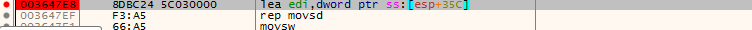
Run again the Software and put in email field test@test (fake email) and serial “test” and look in ESI. ESI is index source register.
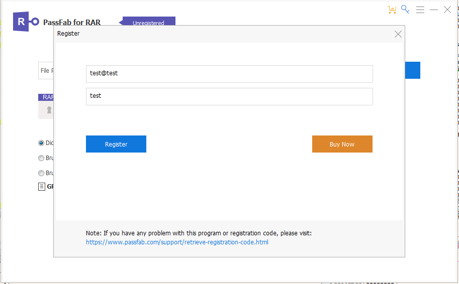
Click on the Register bottom and we have the first serial key ( Pro Personal RAR Password Recovery : ESI: "98AA05-858868-AE5EF0-E1432D-24CFA107" ) in debugger.
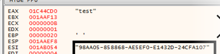
If you can see in debbugger, he tryed to compare original key with my fake key "test".
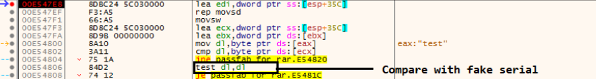
Now we need to run again program and we will se another Serial Keys (Pro Family RAR Password). And last Serial Keys (Pro Unlimited RAR Password).
Test the last key 98AA05-808376-B45CF7-F44A1B-37DCA336
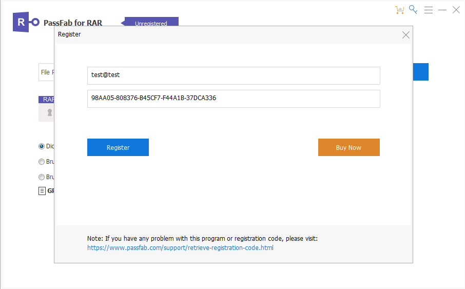
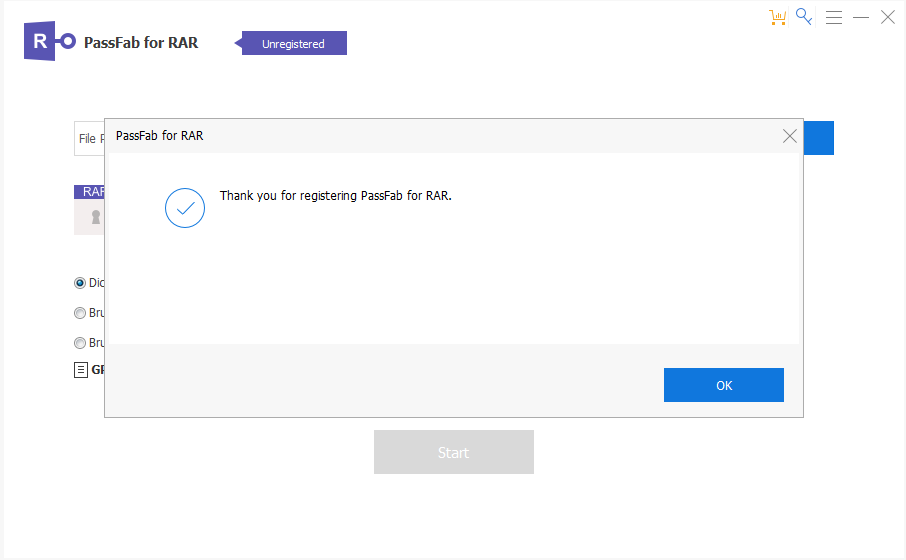
I hope you like to read about this topic Reverse engineering Stuff and Exploit Development. By the way Softwares affected : PassFab for PDF, PassFab for RAR and PassFab for ZIP.
References!!
https://www.hex-rays.com/products/ida/